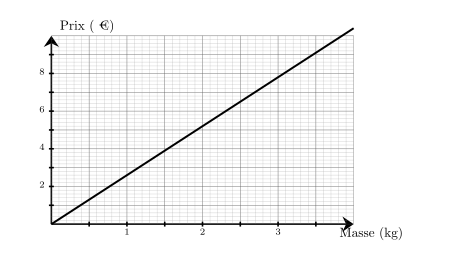
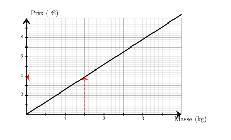
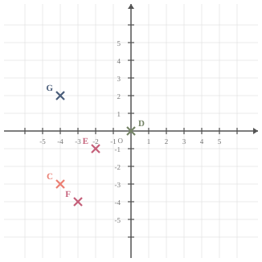
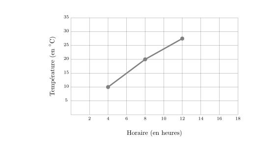

Sur le graphique ci-dessus, on a représenté le prix en euros en fonction de la masse en kilogrammes d'ananas achetés. Quel est le prix à payer pour l'achat de $1{,}5$ kg d'ananas ?

Le prix à payer pour l'achat de $1{,}5$ kg d'ananas est de ${\color{#8B3C52}\boldsymbol{3{,}90}}$ €.

03
Question
Convertir $1\,472\,\text{h}$ en semaines, jours et heures.
Dans une collection comptant 250 disques, on a noté leur style de musique. On a consigné les résultats dans le tableau suivant :
$$\begin{array}{|c|c|c|c|c|c|c|c|c|c|c|}
\hline
\text{Styles} & \text{RnB} & \text{Rap} & \text{Pop} & \text{Jazz} & \text{Folk} & \text{Reggae} & \text{Électro} & \text{Soul} & \text{Rock} & \text{TOTAL}\\
\hline
\text{Effectifs} & 18 & 7 & 16 & 5 & 42 & 56 & 34 & & 38 & 250\\
\hline
\text{Fréquences} & & & & & & & & & & \\
\hline
\end{array}$$
a. Déterminer l'effectif manquant. b. Déterminer les fréquences pour chaque style de musique (en pourcentage, arrondir au dixième si besoin).
a. L'effectif manquant est celui du soul. Soit $e$ cet effectif. $e=250-( 18 + 7 + 16 + 5 + 42 + 56 + 34 + 38 )$ $e=250-216$ $e={\color{#8B3C52}\boldsymbol{34}}$ b. Calculs des fréquences. On rappelle que pour la fréquence relative à une valeur est donnée par le quotient : $\dfrac{\text{effectif de la valeur}}{\text{effectif total}}$
On en déduit donc les calculs suivants :
$$ \def\arraystretch{2}
\begin{array}{|c|c|c|c|c|c|c|c|c|c|}
\hline
& \text{RnB} & \text{Rap} & \text{Pop} & \text{Jazz} & \text{Folk} & \text{Reggae} & \text{Électro} & \text{Soul} & \text{Rock}\\
\hline
\mathbf{Fréquences} & \dfrac{18}{250} & \dfrac{7}{250} & \dfrac{16}{250} & \dfrac{5}{250} & \dfrac{42}{250} & \dfrac{56}{250} & \dfrac{34}{250} & \dfrac{34}{250} & \dfrac{38}{250}\\
\hline
\mathbf{Fréquences\, en\, pourcentages} & {\color{#8B3C52}\boldsymbol{7{,}2 \,\%}} & {\color{#8B3C52}\boldsymbol{2{,}8 \,\%}} & {\color{#8B3C52}\boldsymbol{6{,}4 \,\%}} & {\color{#8B3C52}\boldsymbol{2 \,\%}} & {\color{#8B3C52}\boldsymbol{16{,}8 \,\%}} & {\color{#8B3C52}\boldsymbol{22{,}4 \,\%}} & {\color{#8B3C52}\boldsymbol{13{,}6 \,\%}} & {\color{#8B3C52}\boldsymbol{13{,}6 \,\%}} & {\color{#8B3C52}\boldsymbol{15{,}2 \,\%}}\\
\hline
\end{array}
$$
01
Question
Dans chaque colonne de ce tableau, il y a un unique nombre exprimé sous 3 formes différentes. Compléter ce tableau.
$$\def\arraystretch{2}
\begin{array}{|c|c|c|c|c|c|c|}
\hline
\text{Nombre décimal} & \phantom{rrr} & 0{,}13 & \phantom{rrr} & \phantom{rrr} & 0{,}22 & \phantom{rrr}\\
\hline
\text{Fraction décimale} & \phantom{rrr} & \phantom{rrr} & \dfrac{64}{100} & \phantom{rrr} & \phantom{rrr} & \dfrac{50}{100}\\
\hline
\text{Pourcentage} & 90\,\% & \phantom{rrr}\% & \phantom{rrr}\% & 40\,\% & \phantom{rrr}\% & \phantom{rrr}\%\\
\hline
\end{array}
$$
$c$ étant un nombre entier, exprimer l'entier précédent en fonction de $c$.
Le prédécesseur de $c$ peut se noter : ${\color{#8B3C52}\boldsymbol{c-1}}$ ou ${\color{#8B3C52}\boldsymbol{c+(-1)}}$.
03
Question
Déterminer les coordonnées respectives des points $F$, $C$, $D$, $G$ et $E$

Les coordonnées respectives des points sont : $F({\color{#8B3C52}\boldsymbol{-3}};{\color{#8B3C52}\boldsymbol{-4}})$, $C({\color{#8B3C52}\boldsymbol{-4}};{\color{#8B3C52}\boldsymbol{-3}})$, $D({\color{#8B3C52}\boldsymbol{0}};{\color{#8B3C52}\boldsymbol{0}})$, $G({\color{#8B3C52}\boldsymbol{-4}};{\color{#8B3C52}\boldsymbol{2}})$ et $E({\color{#8B3C52}\boldsymbol{-2}};{\color{#8B3C52}\boldsymbol{-1}})$
04
Question
Le graphique ci-dessous donne l’évolution de la température (en degrés Celsius) en
fonction de l’horaire (en heures).
Entre $4$h et $12$h, de combien de degrés la température a-t-elle augmenté ?

D’après le graphique, à $4$h, la température est de $10$$^\circ$ C et à $12$h, elle est de $27{,}5$$^\circ$ C.
L’augmentation de la température entre $4$h et $12$h est donc de : $27{,}5-10={\color{#8B3C52}\boldsymbol{17{,}5}}$$^\circ$ C.
$\dfrac{x}{10}=13$ $\dfrac{x}{10}{\color{blue}\boldsymbol{\times\,10}}=13{\color{blue}\boldsymbol{\times\,10}}$ $x=130$ La solution de l'équation $\dfrac{x}{10}=13$ est ${\color{#8B3C52}\boldsymbol{130}}$.
03
Question
Les angles $\widehat{xOy}$ et $\widehat{yOz}$ sont adjacents.
L'angle $\widehat{xOy}$ mesure $76^\circ$ et l'angle $\widehat{yOz}$ mesure $104^\circ$.
Que sont-ils l'un pour l'autre ?
$\square\;$ complémentaires $\square\;$ supplémentaires $\square\;$ ni l'un, ni l'autre
$\widehat{xOy}+\widehat{yOz}=76^\circ+104^\circ=180^\circ$. Les deux angles sont supplémentaires car leurs côtés non communs forment un angle plat.
04
Question
Laquelle des 4 figures ci-dessous va être tracée avec le script fourni ?